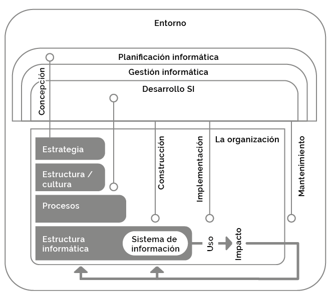
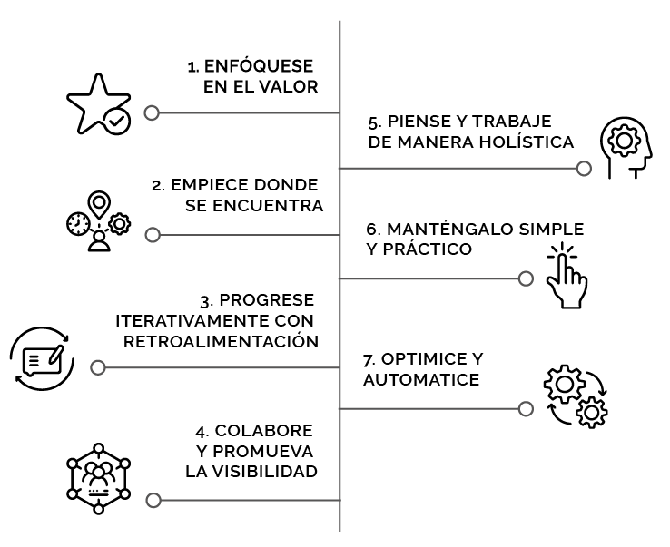
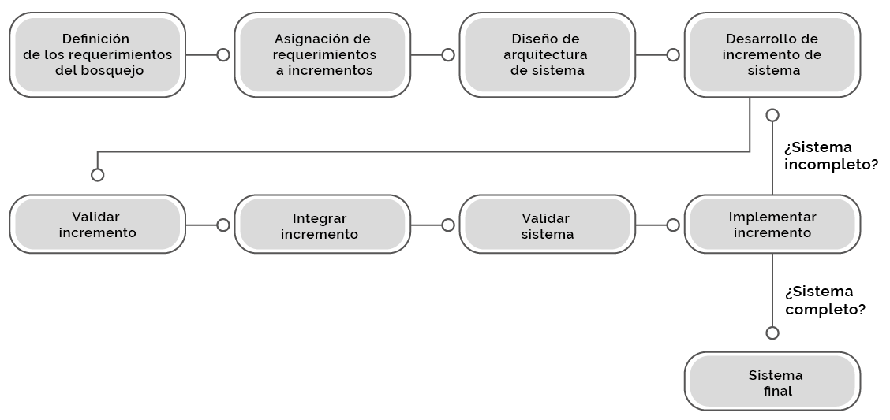
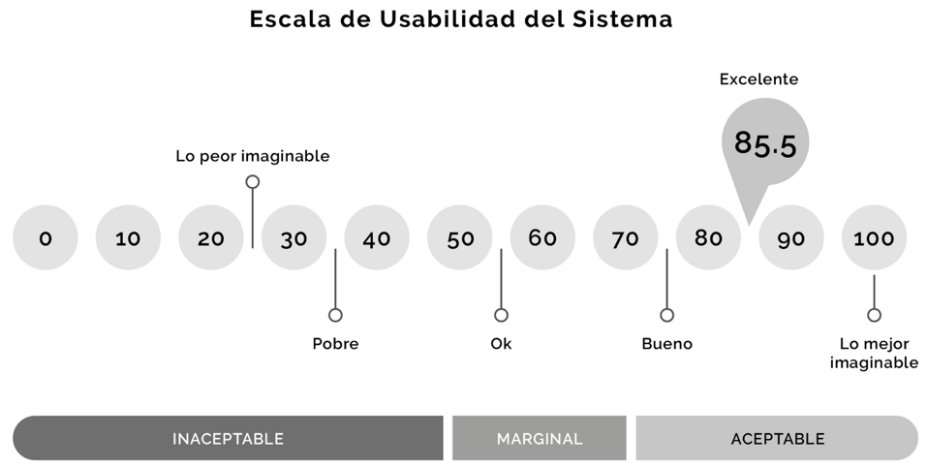
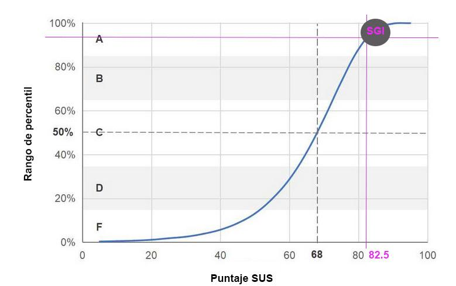

Resumen.
El objetivo de este trabajo es desarrollar un sistema informático para gestionar el manejo de la información de una empresa dedicada a la entrega de servicios en el ámbito cultural. La problemática identificada es el manejo de solicitudes de servicio de manera manual, con demora en respuestas a las mismas, así como la falta de información para elaborar datos estadísticos que permitan llevar a cabo la toma de decisiones. El principal objetivo es automatizar las tareas de los departamentos involucrados utilizando como herramienta de trabajo un sistema de gestión de información que permita llevar un control fluido y organizado en el desarrollo de los procesos operativos y administrativos. Los resultados obtenidos por medio de entrevistas, encuestas, levantamiento de requerimientos y documentación de procesos demuestran la necesidad de desarrollar e implementar una herramienta de software hecha a la medida para gestionar el flujo de trabajo de cada área.
Palabras clave:
Sistema; gestión; Información; Automatización de procesos.
Abstract.
The objective of this work is to develop a computer system to manage the information management of a company dedicated to the delivery of services in the cultural field. The problem identified is the handling of service requests manually, with delays in responses to them, as well as the lack of information to prepare statistical data that allows decision making. The main objective is to automate the tasks of the departments involved using an information management system as a work tool that would allow fluid and organized control in the development of operational and administrative processes. The results obtained through interviews, surveys, requirements gathering and process documentation demonstrate the need to develop and implement a tailor-made software tool to manage the workflow of each area.
Keywords:
System; management; Information; Process automation.
En el contexto de una empresa cuya función principal es ofrecer servicios de calidad certificada, es importante contar con un sistema informático que permita integrar y automatizar sus procesos administrativos y operativos de una manera eficiente con resultados medibles (Lemos, 2015).
El caso concreto que se expone en este documento habla de la empresa Z que obtuvo su certificación de la norma ISO 9001:2015 en octubre de 2018 y que tiene como meta implementar un sistema de gestión de calidad en sus procesos para obtener la recertificación de dicha norma. Los Sistemas de Gestión de Calidad abarcan todas las actividades que se realizan dentro de una empresa y cada departamento debe tener sus propios sistemas para controlar su trabajo y la función de la calidad se encarga de la fiabilidad de estos sistemas y la coordinación entre departamentos (Cortés, 2017).
Para lograr dicha meta se requirió documentar y estandarizar los procesos administrativos y operativos a certificar, así como la sociabilización de toda la documentación de los procesos. La empresa objeto de estudio no tenía una herramienta digital que le permitiera integrar toda esa información por lo que se complicaba tener un manejo óptimo de la información. Otro problema detectado fue que la mayoría de las actividades de cada proceso se realizaba de manera manual a través de solicitudes en papel, con ayuda de herramientas tales como Google Drive o en el caso de algunos departamentos tenían sistemas desarrollados a la medida para ciertas actividades sin integración o comunicación entre ellos mismos, lo cual dificultaba el proceso de transferencia de información cuando interactuaban diferentes áreas.
Cabe mencionar que una de las recomendaciones de ISO 9001:2015 es que las solicitudes de trabajo que se realicen entre los diferentes departamentos de la empresa se resuelvan o se contestan en un plazo no mayor a 5 días hábiles. Este requerimiento de certificación provocaba la necesidad de tener una herramienta que agilice el desarrollo de solicitudes de servicios interdepartamentales ya que, al ser una empresa con más de 150 integrantes distribuidos en lugares físicamente distantes, hace que la carga de trabajo sea pesada para la concreción de dichas solicitudes de servicio.
Desarrollar un sistema informático que se apegue al Sistema de Gestión de la Calidad recomendado por ISO 9001:2015 para documentar los procesos certificados bajo este estándar por la empresa Z.
Determinar el MVP (Producto Mínimo Viable) que cumpla con las funcionalidades detectadas que las áreas mencionadas requieren para alcanzar las metas trazadas en cada proceso certificado en la empresa Z.
Proporcionar una herramienta de software a la cual llamaremos SGI, que permita la interacción documentada y medible de los usuarios de las áreas mencionadas para cumplir con el requerimiento de ISO 9001:2015 de responder solicitudes de servicio en un plazo no mayor a 5 días.
Proporcionar una herramienta tecnológica que permita registrar información y datos básicos de los procesos para evaluar el desempeño y fortalecer la mejora de este.
Gestionar es hacer que las cosas sucedan, gestionar es el proceso de intervenciones para permitir que las cosas sucedan de una forma ética procesual. Gestionar es alcanzar los objetivos propuestos a través de la acción coordinada de personas, a través de la aplicación adecuada de los recursos disponibles. La gestión se mide mediante el uso de indicadores que muestran el porcentaje de avance en los objetivos y/o metas trazadas (Blejmar, 2022).
Según Piña (2006) la gestión de la información es el uso de la información como un activo que permite mejorar la competitividad y la capacidad de respuesta de las empresas, señala que es el resultado de identificar, integrar y analizar la información de manera eficiente y dirigirla a los procesos de toma de decisiones y servicio al cliente.
La gestión interna de una organización es la actividad empresarial que planifica, organiza, le da dirección y permite el control en una organización, que a su vez y en conjunto con los integrantes de esta (directores, gerentes, empleados, entre otros) mejoran la productividad y competitividad de estas a través del uso de técnicas y metodologías (Trujillo, 2012). Las empresas apuestan a los sistemas de información para ser más eficientes al aumentar su productividad o para ser más eficaces (Beynon-Davies, 2018). Una organización que acepta un sistema adecuado de gestión genera confianza dentro y fuera de la misma, proyecta el mensaje de que será capaz de alcanzar sus objetivos logrando una base para obtener la mejora continua lo que permitirá obtener un grado de satisfacción óptimo de parte de las partes interesadas en el proceso (Merino, 2020). Los sistemas de información impactan dentro de todos los procesos de las organizaciones (figura 1.1).
Figura 1.
Impacto de los sistemas de gestión.

Nota. Elaboración propia.
En esta sección se expone información relevante con relación a los marcos de trabajo más importantes en la actualidad, esto con la finalidad documentar las buenas prácticas utilizadas para alcanzar las metas de desarrollo de SGI. ITIL (Biblioteca de infraestructuras de tecnologías de la información) es un conjunto de recomendaciones de buenas prácticas, es ampliamente aceptado y fue diseñado para ayudar a las organizaciones a obtener el mayor beneficio de TI, al alinear los servicios de TI con la estrategia empresarial de las organizaciones (Greenwood, 2020). Hoy, ITIL es propiedad de Axelos, una empresa conjunta entre la Oficina del Gabinete del Gobierno Británico y Capita (Agutter, 2020).
Los Principios Guía son una serie de recomendaciones que, como su nombre lo indica, guían a la organización en todas las circunstancias. Las metas, el personal, las estrategias o la estructura organizacional pueden cambiar en una empresa, pero los principios guía permanecen constantes. Los principios guía son universales y pueden ser aplicables a otros tipos de metodologías como Agile, Lean, COBIT, entre otros (Agutter, 2020).
Agutter (2020) también menciona que los principios guía deben fomentar y apoyar la mejora continua, estos se aplican en toda la organización, en todos los niveles y, además, todo el personal debe conocerlos, aunque no siempre se apliquen en todas las situaciones, si es importante que se revisen frecuentemente en cada ocasión para evaluar si su uso es requerido y apropiado. Agutter (2020) refiere que los principios guía de ITIL son (figura 1.2):
Todo lo que hace la organización debe vincularse, directa o indirectamente, con el valor para sí misma, sus clientes y otras partes interesadas.
No comience de nuevo sin antes considerar lo que ya está disponible para aprovechar. Es importante observar y reconocer de forma objetiva qué se puede usar y qué se debe mejorar, o en su caso replicar, siempre tomando en cuenta los riesgos que conlleva cada decisión.
Resiste la tentación de hacer todo a la vez. Incluso las grandes iniciativas deben llevarse a cabo de forma iterativa. Al organizar el trabajo en secciones más pequeñas y manejables que se pueden ejecutar y completar de manera oportuna, el enfoque en cada esfuerzo será más nítido y fácil de mantener.
Cuando las iniciativas involucran a las personas adecuadas en los roles correctos, los esfuerzos se benefician de una mayor aceptación, más relevancia (porque hay mejor información disponible para la toma de decisiones) y una mayor probabilidad de éxito a largo plazo.
Ningún servicio, práctica, proceso, departamento o proveedor está solo. Los productos que la organización se entrega a sí misma, a sus clientes y a otras partes interesadas se verán afectados a menos que trabaje de manera integrada para manejar sus actividades como un todo, en lugar de partes separadas. Todas las actividades de la organización deben estar enfocadas en la entrega de valor.
Utilice siempre el número mínimo de pasos para lograr un objetivo. El pensamiento basado en resultados debe usarse para producir soluciones prácticas que brinden resultados valiosos.
Las empresas deben obtener el máximo valor del trabajo realizado por sus recursos tanto humanos como técnicos. El método de cuatro dimensiones brinda una visión integral de las diversas restricciones, de las diferentes formas de recursos y otras características que deben tenerse en cuenta al vislumbrar, gestionar u operar una empresa. El uso de la tecnología contribuye a que las empresas puedan llevar a cabo tareas frecuentes y repetitivas, lo que hace posible que los recursos humanos se manejen de manera más eficiente. Cabe señalar que la automatización siempre ayuda, pero las organizaciones no deben de confiar al 100% en la tecnología sin la intervención humana.
Figura 2
Principios guía de ITIL 4.

Nota. Axelos, 2022.
La primera etapa se aborda a través de la metodología cualitativa con una investigación documental tipo diagnóstico y realización de entrevistas de tipo exploratorias. En este primer acercamiento, se realizan dos reuniones en las instalaciones de empresa Z con el personal directamente involucrado en el desarrollo de este proyecto, así como con el personal del área de “Plataformas web”. En dichas reuniones se identifican los procesos internos que realizan y cómo los llevan a cabo, también se muestran documentos tales como mapeos de procesos, hojas de cálculo de Excel, formatos en papel, formatos electrónicos e información compartida en archivos en Google Drive. También se obtuvo una copia digital de dichos archivos para posteriormente profundizar en su estudio y análisis.
Al finalizar cada una de estas reuniones, se realizó una entrevista exploratoria a cada uno de los cinco participantes de cada reunión. Dichas entrevistas se realizaron a los jefes de cada área ya que ellos tienen la visión integral tanto de sus procesos internos, mapeos y tienen también la visión de interacción con otras áreas. En ellas se les preguntó si les gustaría tener un sistema con las características propuestas del SGI. En total se realizan diez entrevistas exploratorias mismas que se graban y se transcriben para su posterior análisis.
A partir de los resultados de las entrevistas exploratorias se mejora el guion para realizar entrevistas semiestructuradas, ya que se tiene una visión más amplia de las necesidades detectadas de los usuarios y de los requerimientos puntuales del sistema. En dichas entrevistas semiestructuradas se formulan preguntas más específicas de cada área involucrada, con base en la información obtenida en las entrevistas exploratorias y en el análisis de la información y archivos que previamente se obtuvieron. Se realizaron un total de diez entrevistas semiestructuradas a las mismas personas que participaron en las entrevistas exploratorias. En estas entrevistas se buscó que la persona entrevistada describiera su proceso interno de trabajo, así como sus funciones diarias para plasmarlas en un papel y la interacción que tienen con el personal de otras áreas, entre otros.
En la segunda etapa se utilizó la metodología cuantitativa (evaluación), esto mediante la aplicación de encuestas dirigidas a los usuarios finales del SGI con el propósito de evaluar el sistema desarrollado y de esta forma obtener retroalimentación para realizar mejoras y/o nuevas versiones. En el mismo sistema se incluye una sección para que de manera aleatoria aparezca una encuesta de funcionalidad del SGI y de los beneficios que observen y hayan obtenido al hacer uso de este.
Ningún gran proyecto puede tener éxito sin un plan. Algunas veces no se sigue de cerca el plan, pero todo gran proyecto debe de tener un plan. El plan les dice a los integrantes del proyecto lo que deben hacer, cuándo y cuánto tiempo deberían dedicarle y lo más importante, cuáles son los objetivos del proyecto. El plan da dirección al proyecto (Stephens, 2015).
El desarrollo de software no es una tarea fácil, prueba de ello es que existen diversas metodologías propuestas tal como se explicó en capítulos anteriores. El marco de trabajo de una metodología de desarrollo de software consiste en:
Una filosofía de desarrollo de software con el enfoque de desarrollo de software.
El uso de múltiples herramientas, métodos y modelos para ayudar en el proceso de desarrollo de software.
Para el desarrollo del SGI se estableció el uso de algunas metodologías de desarrollo señaladas en capítulos anteriores y en algunos casos, una combinación de ellas. Siguiendo esta premisa, el diseño propuesto es tomar como base las buenas prácticas de ITIL para buscar y asegurar la entrega de valor al cliente al ofrecerle un abanico de posibilidades de mejora en la realización de sus tareas y procesos, con incremento en su productividad, así como la reducción de tiempo de realización de estas. Recordemos que ITIL no es una metodología de desarrollo de software, ITIL es una metodología de trabajo de buenas prácticas para el manejo efectivo de TI basada en servicios, misma que define una serie de estructuras organizativas, funciones por departamentos, procedimientos y algunos mecanismos de medición.
Como se mencionó anteriormente, dentro de las prácticas de gestión técnica de ITIL se encuentra el desarrollo y gestión de software. Axelos (2022) menciona que el buen hábito de desarrollo de aplicaciones de software es fundamental para crear valor para los clientes de servicios basados en la tecnología y se utiliza a través de dos metodologías ampliamente conocidas: cascada y ágil. La metodología utilizada en este trabajo es una combinación de ambas, el modelo en cascada se utilizó para definir y establecer las etapas principales del proyecto, tales como: Requisitos, análisis, diseño, codificación, prueba y mantenimiento pero manejándolas de manera dinámica, es decir, quitando la característica secuencial original de ésta metodología y adaptando dichas etapas en una metodología ágil que permitió hacer entregar del MVP, que a su vez se utiliza en un ambiente de pruebas para recibir retroalimentación, hacer correcciones, programar mejoras y volver a entregar el módulo para ya instalarlo en producción (proceso de Mejora continua de ITIL).
Durante la ejecución del proyecto de desarrollo de software se obtiene la información de las entrevistas exploratorias y semi-estructuradas realizadas. Con ello se definen los requerimientos necesarios para desarrollar y se entregan los módulos para recibir la retroalimentación por parte de la empresa Z. Estos pasos también forman parte del proceso de la aplicación de las buenas prácticas de ITIL.
Dentro del diseño de metodología utilizada, se encuentra el adoptar la metodología de Scrum para buscar ser más ágiles en el desarrollo de los módulos del SGI. Se realizaron reuniones diarias de pie recomendadas en esta metodología (algunas veces eran presenciales y la mayoría de ellas de manera virtual) para mantener y promover que se siga en sintonía con los principios de ITIL. Todo esto con el objetivo de lograr los resultados en tiempo y con las funcionalidades establecidas.
Se hace uso de la técnica de "historia de usuarios" conocida también como “user stories”, son descripciones sencillas y cortas de una característica descrita desde el punto de vista de la persona que solicita un requerimiento, generalmente contestan una serie de preguntas, tales como: Cómo, Quiero, Para qué (Patton, 2014). Para el SGI se obtuvieron cinco historias de usuarios, con las cuales se identifican las bases para detallar actividades puntuales de cada módulo del SGI.
En los sistemas basados en la Web se requiere un enfoque pensado en el desarrollo y la entrega de ciclos repetitivos e iterativos (proceso continuo de experimentación) que permite la prueba y evaluación del producto, creando componentes de sistemas que se puedan reutilizar. Como se muestra en la figura 1.3 la entrega incremental es una visión del desarrollo de software donde algunos de los incrementos desarrollados se liberan al cliente y se implementan para utilizarse en un ambiente operacional real (Sommerville, 2011). El enfoque para la entrega del SGI fue totalmente de entrega incremental toda vez que los requerimientos en empresa Z son dinámicos y constantemente hubo nuevos requerimientos. De igual forma, una vez que los usuarios tenían el PMV surgían nuevas ideas y funcionalidades eran requeridas. Este enfoque sirvió para entregar un producto que realmente generó valor al ser un sistema apegado a la realidad operativa y administrativa de la empresa.
Figura 3.
Diagrama de entrega incremental.

Nota. Sommerville, 2011.
Para el desarrollo del SGI se requirió utilizar tecnología web tales como HTML, CSS y JavaScript del lado de cliente, del lado de servidor se requiere utilizar PHP en un servidor web y se utiliza MySQL como la aplicación que permite la gestión de bases de datos.
La primera fase de la implementación consistió en proyectar y desarrollar el módulo de Sistema de Gestión de la Calidad para documentar los procesos certificados bajo el estándar ISO 9001:2015. En esta etapa se desarrolló el código en PHP puro con conexión a la base de datos creada.
El Sistema de Gestión de Calidad tiene elementos importantes en su estructura, entre ellos destacan: Carátula, Mapeo, Documentos internos, Documentos externos, Servicio no conforme, Riesgos y oportunidades y Partes interesadas. En el trabajo desarrollado se programaron dos módulos específicos para el manejo del Sistema de Gestión de Calidad: Uno que se llama “Gestión Admin” que sirve para administrar toda la información documentada de los procesos mencionados, ahí se dan de alta nuevas opciones de menú, nuevos procesos, nuevas carátulas, nuevos mapeos, entre otros y el segundo módulo es de tipo consulta para todos los usuarios del sistema, en él se pueden ver a detalle el desarrollo de cada proceso y estructura mencionada.
La fase 2 consistió en determinar las funcionalidades del MVP del SGI para alcanzar las metas trazadas en las áreas de Finanzas y Auditorías, Desarrollo Humano y Calidad, Servicios Generales, Logística y Tecnologías, Comunicación y Prensa, Diseño y Multimedia y Departamento Jurídico de la empresa Z.
Con base en las entrevistas tipo diagnóstico, en las entrevistas exploratorias y entrevistas semiestructuradas que se realizaron, en la aplicación de encuestas y en el análisis de los documentos y archivos recibidos en dichas entrevistas, se definió la estructura básica que conforma el SGI.
La estructura del menú lleva las opciones Inicio, Perfil, Mi Panel, Servicios, Administrador, Quejas y sugerencias, Soporte y Ayuda y Salir. Se definió que este menú es el que verían todos los usuarios y en función del perfil de cada usuario verían opciones específicas en las opciones de Servicios y Mi Panel. En la opción de servicios se puede seleccionar el nombre del departamento y/o área a la cual se le realizarán solicitudes de servicio.
Cabe resaltar que la principal función del sistema desarrollado era que el SGI tuviera la suficiente robustez para mostrar un abanico de opciones en cada área a automatizar y que tuviera la suficiente flexibilidad para adaptarse a constantes cambios en estas primeras fases de desarrollo. Recordemos que se aplica el método de “Desarrollo Incremental” en ciclos sprint por lo que en cada entrega semanal podían surgir cambios y nuevas funcionalidades de las características del sistema entregado en cada periodo.
Dentro de las características que se definieron se estableció que era importante que cada usuario tuviera un listado general de las solicitudes hechas a su departamento para que pudiera darle seguimiento de manera rápida. Para esto se programó una opción para cada área del listado de solicitudes con filtros de búsqueda especial, por tipo de solicitud o por fecha. Cabe señalar que en dicho listado de solicitudes se muestra la fecha de solicitud, la fecha de estatus concluido y los días transcurridos entre la primera fecha y la segunda, esto nos permite llevar estadísticas del tiempo de respuesta que cada solicitud tiene, la funcionalidad del sistema permite que al dar click en el botón “Ver o editar” se pueda ver la solicitud a detalle de dicha solicitud.
Parte fundamental del MVP de esta fase 2 fue proyectar y programar las notificaciones de solicitudes y respuestas de estas. Como se mencionó en la sección de objetivos de este desarrollo, es importante que las áreas tengan una respuesta a sus solicitudes en un plazo no mayor a 5 días hábiles. Para lograr que la comunicación fuera más fluida a través del SGI se programaron notificaciones en el sistema, tanto internas como externas. De manera interna por que al acceder al SGI se muestra una campanita con el número de notificaciones pendientes de leer y de manera externa por que llegan notificaciones vía correo electrónico para que los usuarios al revisar sus correos electrónicos vean que han recibido una nueva solicitud de servicio de su área. También se guarda un historial de los cambios que ha tenido cada solicitud, esto con la finalidad de llevar un registro histórico de la participación de cada usuario en cada solicitud realizada.
El desarrollo de pruebas pretende mostrar que un sistema hace lo que se define que haga, también ayuda a encontrar anomalías o errores en el programa antes de usarlo. Durante este proceso las pruebas se pueden implementar en tres niveles, los cuales son: (Sommerville, 2011).
1. Pruebas de unidad donde se diagnostican funciones detalladas del programa o clases de objetos que trabajan de manera individual.
2. Pruebas del componente donde las funcionalidades pequeñas se reúnen o integran para crear componentes compuestos o funciones, se enfoca en probar las interfaces de dichas funciones.
3. Pruebas del sistema donde alguna o todas las funcionalidades en un sistema se manejan de manera integral y se hacen pruebas a todo el sistema desarrollado.
A través del uso constante, de la administración, actualización y consulta del Sistema de Gestión de Calidad a través del SGI ha quedado demostrado que la implementación de un sistema informático para la gestión de la información puede contribuir a que una empresa obtenga o mantenga la certificación ISO 9001:2015. En noviembre de 2021, la empresa Z obtuvo la recertificación de ISO 9001:2015 por parte de la empresa certificadora, cabe resaltar que cada 6 o 12 meses se hace una revisión de los procesos de mejora continua del Sistema de Gestión de Calidad y el Sistema de Gestión de Calidad del SGI ha sido una herramienta fundamental para documentar las nuevas mejoras a los procesos certificados. En la última auditoría realizada la empresa Z recibió felicitaciones por parte de los auditores en referencia al SGI.
Los usuarios acceden al programa principal de acceso al sistema, escriben su cuenta y contraseña y después de realizar varias validaciones internas el SGI permitió el acceso al mismo. De forma deliberada se intentó acceder con una contraseña errónea y el SGI emitió un mensaje de error.
Los usuarios acceden al SGI y de forma intencional tratan de acceder a opciones del menú restringidos para su nivel de usuario y/o perfil, como respuesta el SGI no permite el acceso a dichas opciones del menú. Por otro lado, tratan de entrar a las opciones del sistema que sí están autorizados y pueden ver las opciones de manera correcta.
Un usuario de área del departamento de Finanzas accede a su panel de servicios y genera una nueva solicitud al departamento de Sistemas para solicitar apoyo para configurar el correo electrónico institucional en su computadora. El jefe del departamento de sistemas recibe la solicitud del usuario del área de Finanzas y la asigna a su técnico de correos. El técnico de correos electrónicos recibe la solicitud de soporte por parte del usuario del área de Finanzas, éste procede a dar seguimiento a dicha solicitud y una vez resuelta, responde la solicitud de servicio o ticket al usuario de Finanzas. Una vez completada la solicitud se registra el nuevo estatus de “concluida” y se registran datos como cuántos días tardó en atender la solicitud, quién la atendió, comentarios, etc.
El cuestionario utilizado para obtener los datos necesarios para medir la percepción de usabilidad del SGI es el sistema System Usability Scale (SUS). Esta Escala de Usabilidad de Sistemas fue desarrollado por John Brooke con la finalidad de medir la usabilidad de sistemas computacionales en los que estuvo participando. Al percatarse que la SU era útil decidió liberarlo para que colegas y otras empresas lo utilizaran. De esa forma se podrían comparar productos desarrollados y se podrían generar estándares en la industria, el resultado de esa aportación de John Brooke fue el ISO 9241-sección 11 (Montiel, 2017).
El SUS mide los parámetros mostrados a continuación (Brooke, 1996):
Efectividad: Si los usuarios pueden realizar sus tareas y cumplir sus objetivos.
Eficiencia: Cuántos recursos se invirtieron para alcanzar los objetivos.
Satisfacción: El nivel de bienestar que experimentaron para llegar a esos objetivos.
Brooke (1996) menciona que la escala se interpreta de la siguiente forma: Si llega a 25 puntos, la usabilidad es lo peor imaginable, en el rango de 25 a 38, la usabilidad es pobre, en el rango de 39 a 52 la usabilidad es aceptable, de 53 a 73 la usabilidad es buena, de 74 a 84 es muy buena, si llega a los 85, la usabilidad es excelente y de 85 a 100 es lo mejor posible (figura 1.4).
Figura 4.
Pantalla de percepción de usabilidad.

Nota. Elaboración propia basada en Brooke (1996).
Montiel (2017) afirma que él SUS es confiable por que los participantes responden acertadamente para otorgar una calificación a las diferentes características de un desarrollo de software y es válido por que mide lo que dice que mide. Al aplicar el SUS se pide al participante que evalúe del 1 al 5 (1 es totalmente desacuerdo y 5 totalmente de acuerdo) cómo ve las funciones del sistema que utilizó. Una vez que el usuario contesta el cuestionario se puede generar un promedio y se obtiene una calificación final que muestra el nivel de usabilidad del sistema evaluado.
Para obtener la puntuación del SUS se realizan varios cálculos. A la escala obtenida en las preguntas 1,3,5,7 y 9 se le resta un punto, obteniendo como resultado del 0 al 4 como máximo en cada elemento. En el cálculo del valor de las preguntas 2,4,6,8 y 10 a 5 se le resta el puntaje seleccionado. Finalmente se suman los totales calculados y se multiplican por 2.5, el número resultante es el nivel de usabilidad (Brooke, 1996). Se programó el SGI para que, de forma aleatoria, un total de 30 usuarios contesten la encuesta de satisfacción una vez que acceden al sistema. Los datos obtenidos mediante la aplicación de dicha encuesta se procesaron en Excel obteniendo así el nivel de usabilidad. El porcentaje de usabilidad del SGI fue de 82.5, rango de “muy buena” según lo descrito en párrafos anteriores. Los resultados se muestran en la figura 1.5.
Figura 5.
Pantalla de percepción de usabilidad del SGI.

Nota. Elaboración propia basada en Brooke (1996).
Con los resultados de las pruebas realizadas al MVP del SGI mostradas en esta sección, así como el resultado de las encuestas procesadas a través del SUS se pone en evidencia el avance del flujo de trabajo, la efectividad, la mejora del tiempo de respuesta, la eficiencia en la ejecución de los procesos y el índice de satisfacción de los usuarios que se obtiene a través del uso del SGI. Estos resultados demuestran que la implementación de un sistema informático para la gestión de la información contribuye en el incremento de la productividad en una empresa y mejora el desempeño laboral de sus usuarios.
Un sistema web de gestión interna puede motivar a los usuarios de una empresa para que se sientan más productivos y perciban un ambiente fluido de información y retroalimentación. El SGI propuesto en este trabajo ofrece herramientas que les permiten ser más productivos en aras de alcanzar las metas propuestas, con indicadores de desempeño satisfactorios.
Con relación al objetivo general planteado en este estudio: “Desarrollar e implementar un sistema web con el marco de desarrollo PHP para automatizar y gestionar la información generada a través de los procesos de Finanzas y Auditorías, Desarrollo Humano y Calidad, Servicios Generales, Logística y Tecnologías, Comunicación y Prensa, Diseño y Multimedia y Departamento Jurídico de la empresa Z”, las pruebas de solicitudes realizadas entre usuarios de los departamentos señalados arrojaron un nivel de satisfacción del 98%. Dichas pruebas se realizaron como pruebas piloto seleccionando un integrante de cada departamento, este nivel de satisfacción se reforzó con el resultado de la aplicación de encuestas para obtener el índice de satisfacción de los usuarios.
Con relación a los objetivos específicos, el primero de ellos era “proporcionar un sistema web que se apegue al Sistema de Gestión de Calidad recomendado por ISO 9001:2015 para documentar los procesos certificados por la empresa Z”, este objetivo se cumplió dado que el SGI desarrollado cuenta con un módulo específico para documentar los procesos señalados, en la última auditoría a la empresa Z por parte de la entidad certificadora hubo un reconocimiento especial por el sistema web con que documentan sus procesos y se proyecta que este se replique en empresas hermanas de la empresa Z. De igual forma se aplicaron encuestas de satisfacción de manera aleatoria a los usuarios de este módulo y el nivel de satisfacción arrojó un resultado del 100%. Con respecto a este objetivo se puede concluir que un sistema de gestión interna puede servir como soporte tecnológico para que las empresas que estén interesadas en obtener y/o mantener una certificación en la norma ISO 9001:2015 puedan documentar sus procesos e información con la finalidad certificarse en dicha norma.
El segundo objetivo era “Determinar el MVP que cumpla con las funcionalidades detectadas que las áreas mencionadas requieren para alcanzar las metas trazadas en cada proceso certificado en la empresa Z”. De igual forma queda demostrado que la empresa Z obtuvo la interoperabilidad de sus áreas a través del uso de solicitudes de servicio digitales entre los departamentos de Finanzas y Auditorías, Desarrollo Humano y Calidad, Servicios Generales, Logística y Tecnologías, Comunicación y Prensa, Diseño y Multimedia y Departamento Jurídico de la empresa Z. Esto se pudo medir con indicadores de desempeño mismos que están documentados en su Sistema de Gestión de Calidad. En cuanto al nivel de usabilidad se refiere, se observa un nivel aceptable en cuanto a la recepción inicial para usar el SGI. Se considera que existen áreas de mejora dado que el porcentaje de usabilidad alcanzado es de 82.5, si bien está clasificado como muy bueno según la escala SUS, se puede mejorar para alcanzar los siguientes niveles. La percepción de que es un sistema que beneficia la operación de sus actividades es positiva aun cuando según las respuestas de la encuesta aplicada, si había cierto temor al inicio del proceso de aprendizaje y automatización de sus actividades.
Con respecto al tercer objetivo específico de este trabajo que se refiere a “Proporcionar una herramienta de software que permita la interacción documentada y medible de los usuarios de las áreas mencionadas para responder solicitudes en un plazo no mayor a 5 días hábiles”, se demostró, primero con la prueba piloto y después con el uso diario del SGI en “producción” o ya en su ambiente real, que al recibir una solicitud de servicio un usuario, primero se da cuenta de manera rápida que la recibió por que le llega una notificación dentro del SGI en forma de campanita y otra notificación por correo electrónico. Mediante encuestas realizadas se comprobó que para los usuarios es más fácil dar seguimiento a una solicitud de servicio a través del SGI, con la aplicación de dichas encuestas se obtuvo un nivel de satisfacción del 90%.
Con relación al cuarto y último objetivo específico “Proporcionar una herramienta tecnológica que permita registrar información y datos básicos de los procesos para evaluar el desempeño y fortalecer la mejora del mismo”, a través de las pruebas piloto realizadas se pudo demostrar que se almacenan datos importantes de cada solicitud de servicio, entre ellos la fecha en que se recibió la solicitud, la fecha en que se resolvió, a qué usuario fue asignado, estatus de la misma, tiempo de respuesta, número de días transcurridos y con estos datos queda demostrado que se cuenta con la información para evaluar el desempeño por usuario, por área, entre otros.
En conclusión, se puede considerar satisfactorio el resultado de desarrollar e implementar un sistema web de gestión interna, la calidad de este es aceptable y cumple con los objetivos definidos. Siempre un nuevo sistema pone en alerta a los usuarios y al principio se resisten al cambio, ese desafío resultó exitoso al término de las pruebas piloto y de la implementación en el ambiente real de producción.
Agutter, C. (2020). ITIL(R) Foundation Essentials ITIL 4 Edition: The ultimate revision guide (ITGP, Ed.).
Beynon-Davies, P. (2014). Sistemas de información ([edition unavailable]). Reverte. https://www.perlego.com/book/1976301/sistemas-de-informacin-introduccion-a-la-informatica-en-las-organizaciones-pdf
Blejmar, B. (2022). Gestionar es hacer que las cosas sucedan (Noveduc, Ed.; 1st ed.).
Brooke, J. (1996). "SUS: a "quick and dirty" usability scale". In P. W. Jordan; B. Thomas; B. A. Weerdmeester; A. L. McClelland (eds.). Usability Evaluation in Industry. London: Taylor and Francis.
Cortés. (2017). Sistema de gestión de calidad (Iso 9001:2015) ([edición no disponible]). Ediciones de la U.
Greenwood, A. (2020, May 8). The secret to IT service Management: The ITIL Service Lifecycle. https://www.process.st/itil-service-lifecycle/
Lemos, P. L. (2015). Cómo documentar un sistema de gestión de calidad según ISO 9001:2015 ([edición no disponible]). Fundación Confemetal.
Merino Bada, C., & Cañizares Sales, R. (2020). Auditoría de sistemas de gestión de seguridad de la información (FC Editorial, Ed.).
Montiel, J. (27 de Septiembre de 2017). De la Escala de usabilidad de Sistemas. Recuperado de https://medium.com/@m00nt/de-la-escala-de-usabilidad-de-sistemas-97c935e68fa9
Patton, J. (2015). User Story Mapping (Oreally Media Inc, Ed.).
Piña Rodríguez, R. A. (2006). La gestión de la información asumida como ciencia en el arte de la gestión empresarial. Ciencias Holguín, Vol. XII, Núm. 1, enero-marzo, 2006, Pp. 1-14 Centro de Información y Gestión Tecnológica de Santiago de Cuba Holguín, Cuba. https://www.redalyc.org/pdf/1815/181515833005.pdf
Sommerville, I. (2011). Ingeniería de Software (Pearson Educación, Ed.).
Stephens, R. 2015. Beginning software engineering. Editorial Wrox.
Trujillo Arias, C. I. (2012, May 31). Ingeniería en gestión empresarial. 2012. https://www.gestiopolis.com/ingenieria-en-gestion-empresarial/
Licencia: Esta obra está protegida bajo una Licencia Creative Commons Atribución-CompartirIgual 4.0 Internacional.